★
Сюжет: «Увидимся на карте» сцена
Кульминация главы 1. Вторая точка открыта, камера впервые отдаляется на всю Уфу — и на карте двенадцать сиреневых ромбов «Хлебного двора».

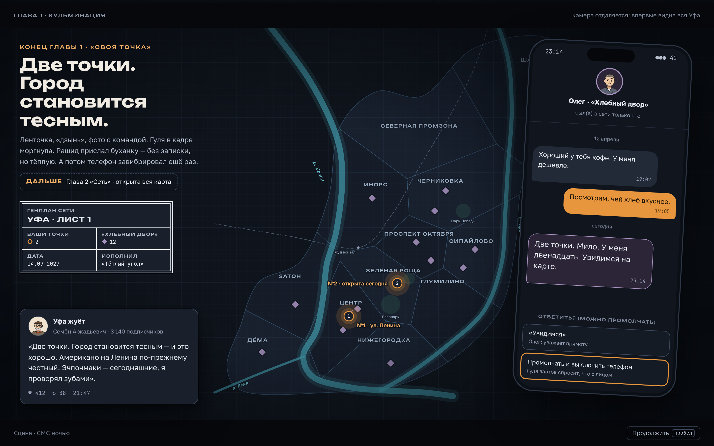
Пять стадий одной истории: от смены за чужой стойкой в «Калаче» до совета директоров холдинга. Новые стадии показаны макетами, стадии 2 и 3 — скриншотами игры, какая она сейчас.
Симулятор жизни молодого бариста в «Калаче» на Пушкина: месяц идёт сам, решения — карточками. Деньги, силы, настроение и соблазны против цели — накопить на свою точку.
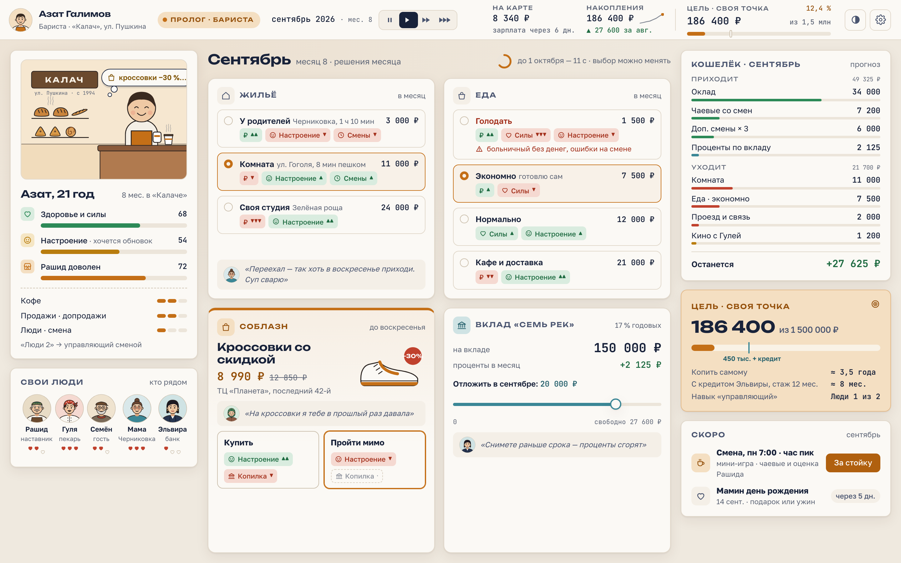
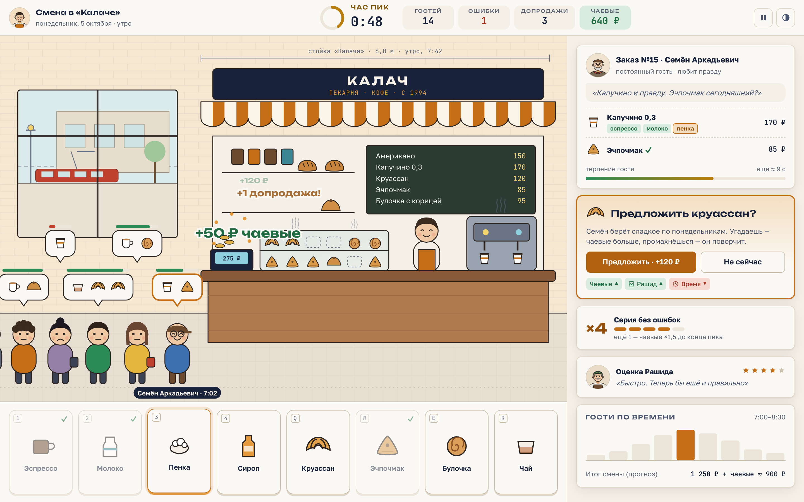
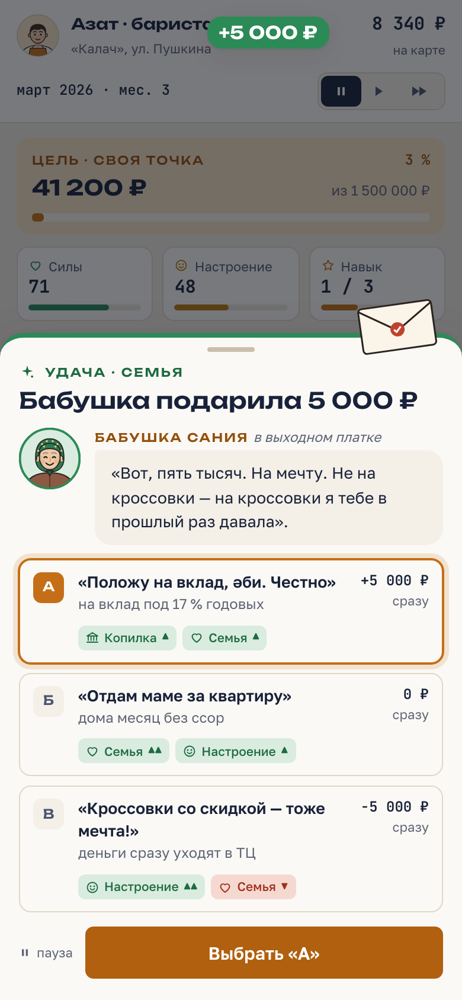
Одна кофейня «Тёплый угол» на Ленина, всё видно вблизи: витрина, очередь, мысли гостей, меню и цены. Первые вехи и первый человек в команде.
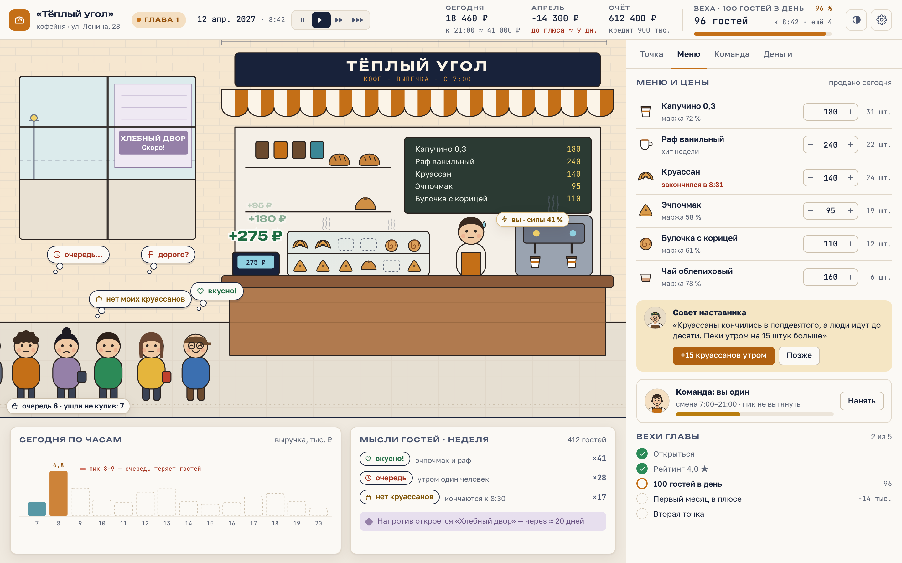
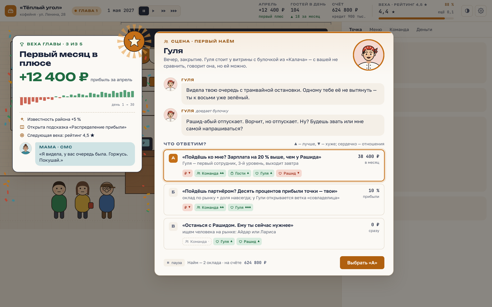
Кульминация главы 1. Вторая точка открыта, камера впервые отдаляется на всю Уфу — и на карте двенадцать сиреневых ромбов «Хлебного двора».

Нынешний первый акт: карта-генплан, точки, цеха, команда, события, финансы, тренеры. Добавим живость в духе Nintendo: человечков в очереди, пар над хлебом, мысли гостей и маленькие вехи каждые 3–5 минут.
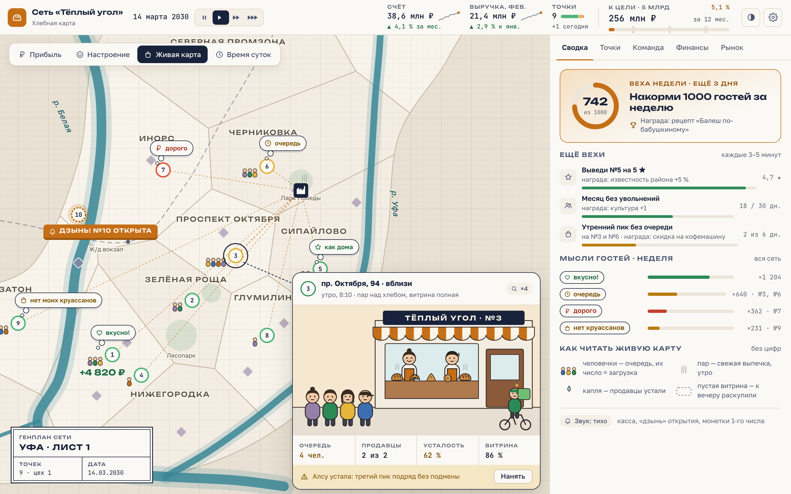
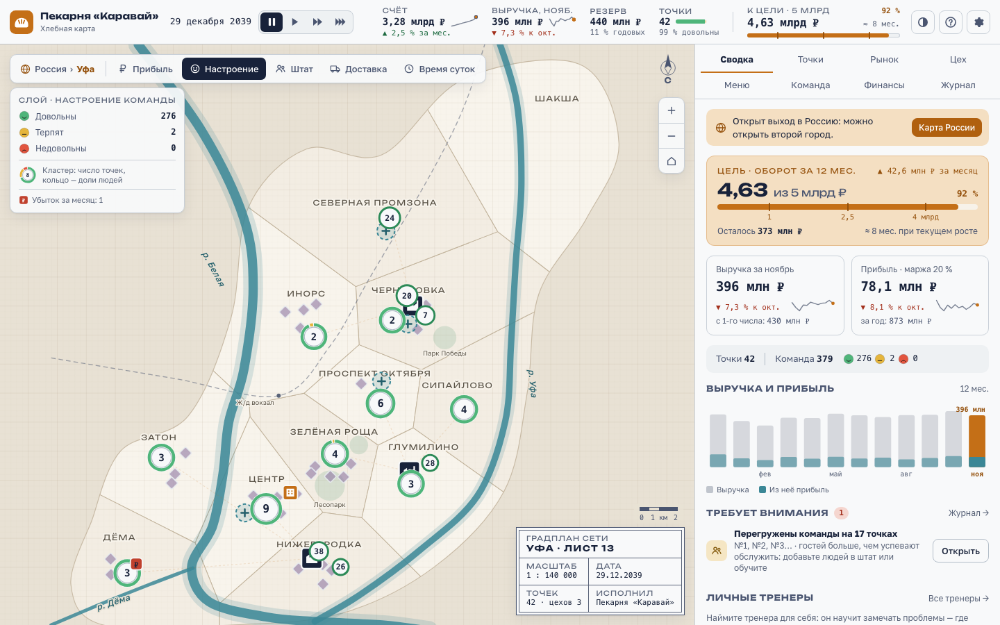
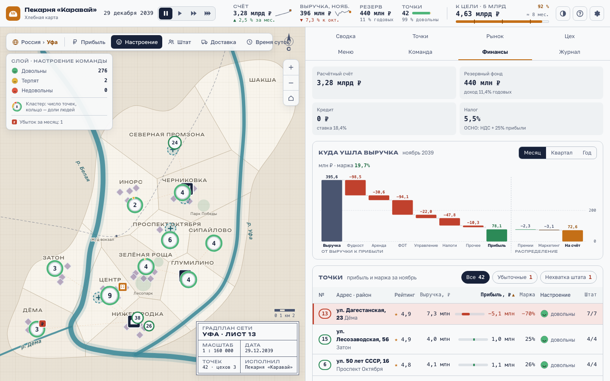
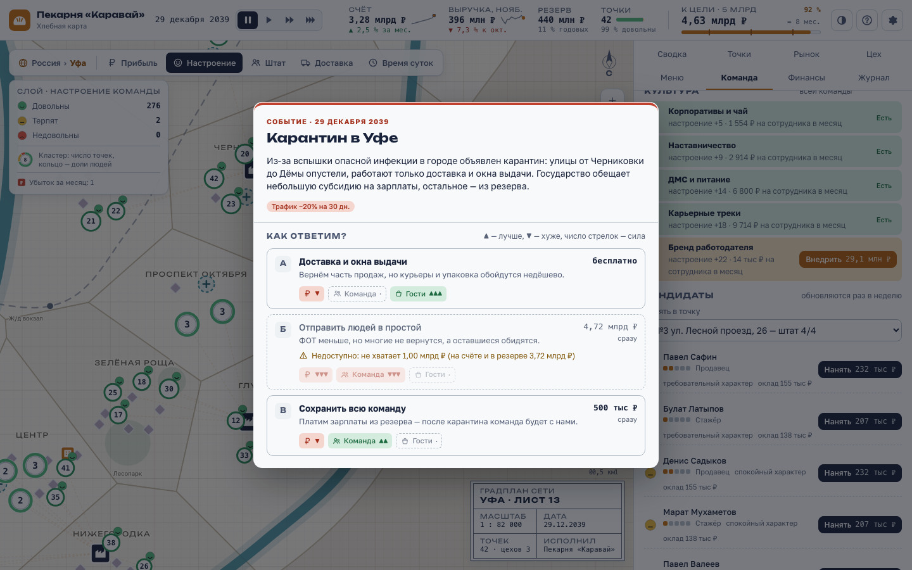
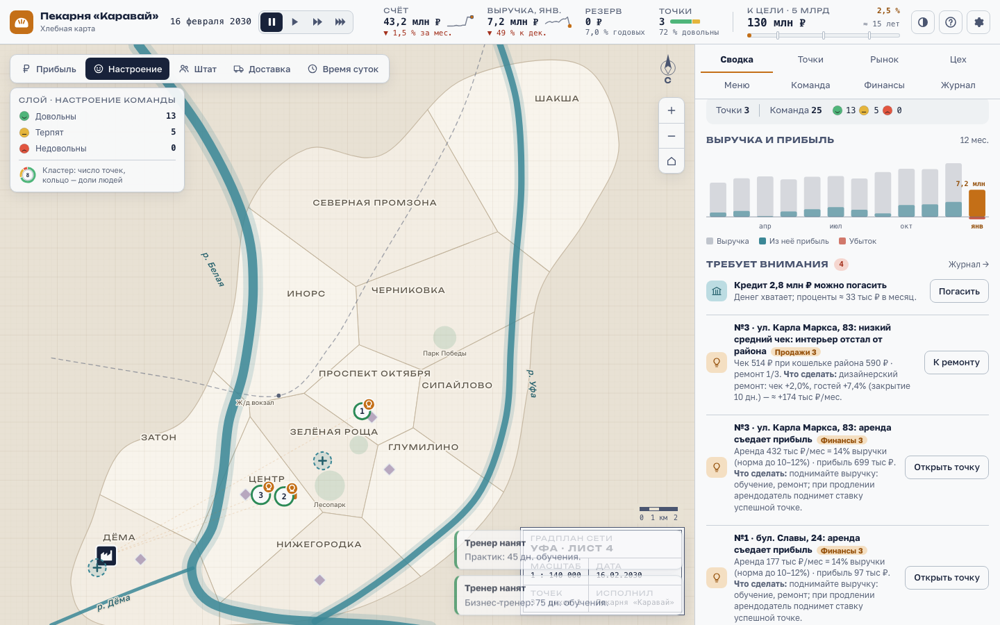
Второй акт: 19 городов, директора вместо ручного управления, штаб и университет, логистика и федеральный «Хлебный двор».
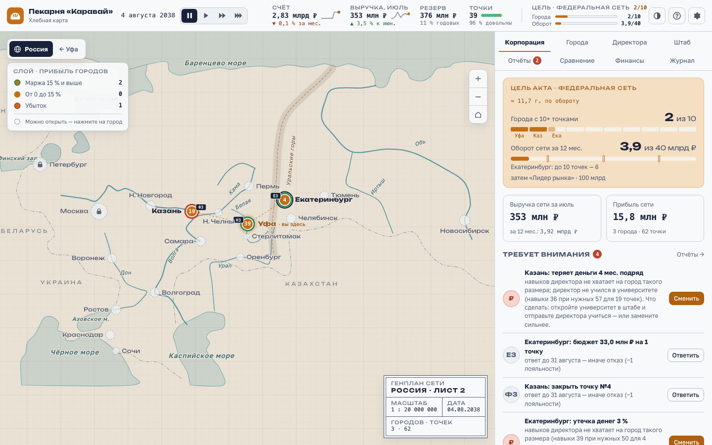
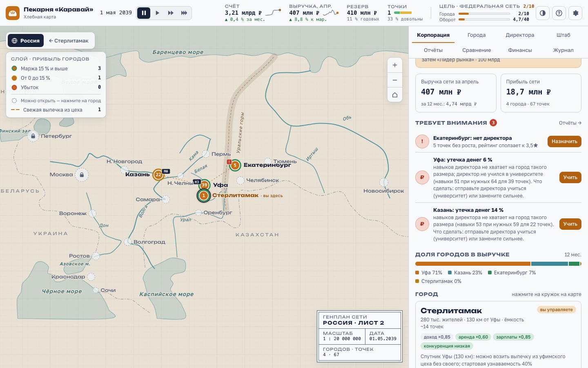
Финал: всё своё, от поля до полки. Мельница, фабрика, франшиза, полки супермаркетов — и совет директоров, где решается, звонить ли в колокол на бирже.
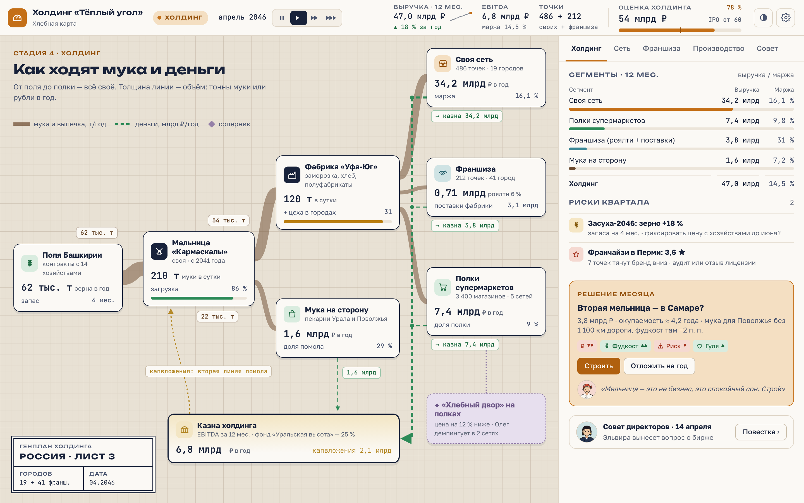
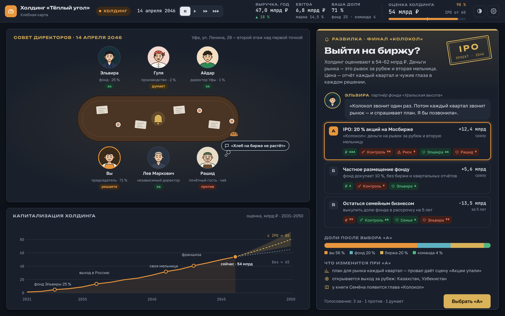